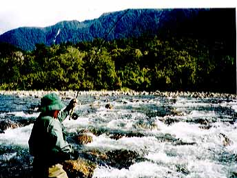
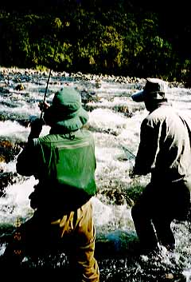
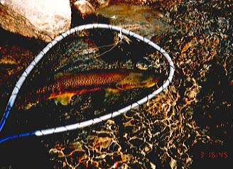

Photo Gallery
98/12/03 Gold miner's dream, fishermen's dream

A rough fight.
Westland was very busy at the time of "Gold rush". We walked on a track that covered with heavy, dense bush toward upstream. The track was constructed by gold mine workers long time ago. That brown trout, which I made a strike at the other side of the rapid rush to upstream, then turned to downstream with his unbelievable power.

The beat of the trout.
The fish stuck together with boulders on the river bed, and continued his resistance. Brent set his landing net, but it did not move for a long time. What I only could was just keep my rod high and feel the trout's heavy movement.

Something has finished.
The brown trout gave me a 50 meter running, and finally set into Brent's landing net. He shined like a gold ingot, not like a fish.
Photo Gallery Contents
Home